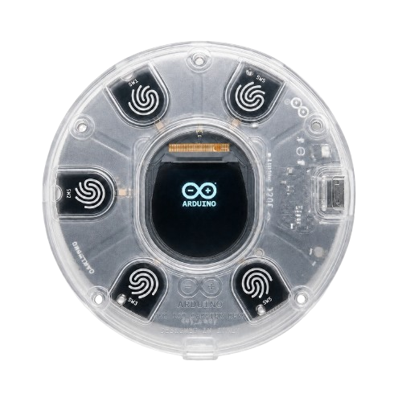
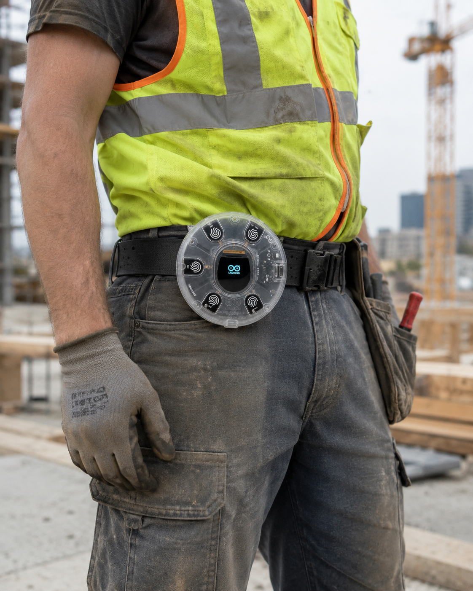

En obras con ruido sobre 85 dB, la voz no es suficiente. GuardaObra detecta caídas y exposición térmica extrema, y alerta al supervisor en segundos — sin que el trabajador haga nada.

El problema real
En las obras de construcción, cuando ocurre un accidente, el trabajador accidentado no puede reportarlo — ya sea por el ruido, la inconsciencia o el miedo a represalias.
Ese retraso convierte lesiones tratables en consecuencias permanentes. GuardaObra elimina ese tiempo muerto.
Niveles de ruido superiores a 85 dB impiden comunicación verbal efectiva en toda la obra.
Los trabajadores evitan reportar por miedo a penalizaciones o detener la producción.
Trabajadores nuevos no internalizan los protocolos de emergencia antes de que ocurra un accidente.
La solución
GuardaObra actúa por sí solo. No necesita que el trabajador piense, grite ni recuerde un protocolo.
Detecta cambios bruscos de velocidad y aceleración propios de una caída de altura. Filtra automáticamente el movimiento normal de caminata para evitar falsas alertas.
Monitorea la exposición térmica del trabajador en tiempo real. Si supera umbrales críticos por tiempo prolongado, activa la alerta antes de que ocurra un golpe de calor.
Al detectar un evento, el dispositivo envía la alerta por red inalámbrica directamente al supervisor o central de mando — sin dependencia del celular del trabajador.
Carcasa robusta diseñada para resistir polvo, vibraciones y condiciones climáticas adversas. Se monta en el cinturón del trabajador sin incomodar su movilidad.
A diferencia de pulsadores de emergencia, GuardaObra no requiere que el trabajador actúe. Si está inconsciente, el reporte igual llega al supervisor.
Autonomía pensada para jornadas completas de obra. Indicador visual en pantalla integrada para conocer el estado del dispositivo en todo momento.
El dispositivo
Un hardware compacto y robusto que integra todo lo necesario para proteger a tu equipo desde el primer día de trabajo.
Muestra estado del dispositivo, alertas y datos operativos durante la jornada.
Cinco zonas táctiles configurables para navegación, encendido lógico o alerta SOS manual.
Envía datos y eventos al panel de monitoreo cuando existe red WiFi disponible.
Registra aceleración y giro para estimar caídas, impactos y movimientos bruscos.
Registra la temperatura del entorno para apoyar la detección de condiciones de calor en obra.
Alimentación con batería Li-Ion 18650 y recarga mediante micro-B USB de 5V.

En el campo real
Enciende, fija y monitorea. GuardaObra se activa con el botón táctil 0 y se coloca en el cinturón del trabajador antes de iniciar la jornada. Desde ese momento, funciona de forma autónoma, detectando eventos de riesgo sin que el trabajador tenga que detenerse, revisar el dispositivo o recordar un protocolo.
El proceso
El acelerómetro registra una caída brusca o el sensor de temperatura supera el umbral crítico configurado.
El procesador descarta falsos positivos comparando el patrón con movimientos normales de la jornada.
En segundos, la alerta llega al panel del supervisor con ubicación, tipo de evento y trabajador.
El supervisor activa el protocolo de emergencia con información precisa — sin buscar ni preguntar.
Ventaja competitiva
| Característica | GuardaObra | Blackline Guardaty | StayGuarda | GuardatyCulture |
|---|---|---|---|---|
| Detección autónoma de caídas | ✔ | ✔ | ✗ | ✗ |
| Sensor de temperatura integrado | ✔ | ✗ | ✗ | ✗ |
| Funciona sin smartphone del trabajador | ✔ | ✔ | ✗ | ✗ |
| Alerta aunque el trabajador esté inconsciente | ✔ | Parcial | ✗ | ✗ |
| No requiere suscripción mensual | ✔ | ✗ | ✗ | ✗ |
| Sin capacitación adicional | ✔ | Parcial | ✗ | ✗ |
Solicita una demo gratuita y te mostramos cómo GuardaObra se integra a tu operación en un día.